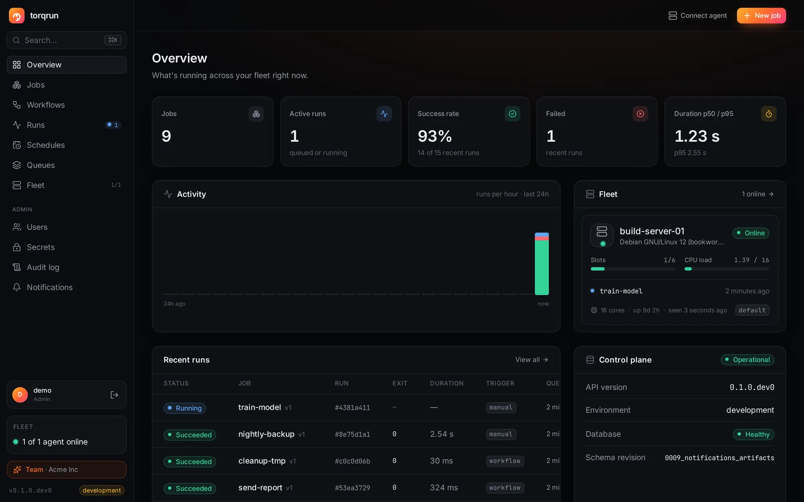

Live logs from every machine
Watch stdout and stderr stream in real time, search them, download them, and keep the full history of every attempt.
Schedules, workflows, retries and live logs for the scripts that run your business, executed by lightweight agents on your servers, laptops and cloud VMs. Agents only connect out. No inbound ports, no SSH keys.
$ git clone https://github.com/anshulsharma7/torqrun.git && cd torqrun && make up

Runs anywhere you do
make up starts the whole platformReliable execution, full history and a real UI, without adopting an SDK or rewriting your scripts.
Watch stdout and stderr stream in real time, search them, download them, and keep the full history of every attempt.
Cron or intervals in any time zone, with sane DST handling and catch-up rules.
0 2 * * *nightly-backup*/15 * * * *sync-orders@daily · ISTdaily-etlDAGs with parallel branches and trigger rules. Rerun only what failed.
Install with one line. Each agent has its own credential and is easy to drain or revoke.
Run any job in a fresh Docker container with CPU, memory and network limits, and collect the files it produces.
Users and roles, an encrypted secrets manager masked in logs, an audit log, and Slack, Teams and email alerts.
Real screenshots, nothing mocked up.
A PostgreSQL-backed control plane and agents that pull their work.
API, scheduler, web UI and a bundled agent, with Docker Compose.
# needs Docker, git and make
git clone https://github.com/anshulsharma7/torqrun
cd torqrun && make upCreate a token under Fleet → Connect agent and run one line on each server.
curl -fsSL https://torqrun.you/agent/install.sh \ | sudo bash -s -- --token tqe_…
Add a job or a YAML workflow, give it a schedule, and watch it run live.
tasks:
extract: {job: extract-events}
transform: {job: transform, depends_on: [extract]}| crontab on each server | Torqrun | |
|---|---|---|
| Did last night's run work? | ✕Check each server's logs | ✓One dashboard, full history |
| Failures | ✕Silent | ✓Retries, plus alerts on Team |
| Dependencies between jobs | ✕Sleep and hope | ✓Workflows with trigger rules |
| A machine dies mid-run | ✕Nobody knows | ✓Detected, retried or flagged |
| Live output | ✕SSH in and tail | ✓Streams in the browser |
| Time zones and DST | ✕Server-local surprises | ✓Per schedule, defined behaviour |
The orchestration engine is open source. Team and Enterprise add what you need when more people rely on it.
For individuals and evaluation
For teams running production jobs
For security and compliance needs
Clock icon: on the roadmap, built for Enterprise customers on request. Everything else is available today. Full comparison
The whole orchestration engine is free, with no limits on jobs, runs or agents: schedules, workflows, retries, remote agents, containers, artifacts and metrics. Team adds multiple users and roles, a secrets manager, an audit log and alerts. Enterprise adds SSO, an SLA and compliance help.
Jobs always run on your own agents. Self-hosted, everything else stays on your infrastructure too. Agents connect out over HTTPS, so you never open ports on the machines that run your jobs.
No. Torqrun runs plain Python and shell scripts, or anything in a Docker image. There's no SDK to adopt.
One command, make upgrade, with the license key you receive. It backs up first, keeps every job, run, schedule, workflow and agent, and rolls back automatically if anything fails.
Torqrun focuses on running plain scripts reliably across many machines: outbound-only agents, no SDK, and a fast UI with live logs. It doesn't try to be a data-asset framework.
It's pre-1.0. Every feature is covered by automated tests, crash and restore drills, load benchmarks and vulnerability scans on every change. Start with non-critical workloads and read the production guide.
Self-host Torqrun in one command, connect your machines, and see every run from one place.